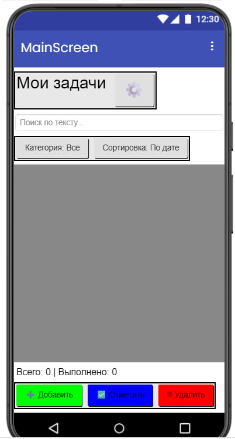
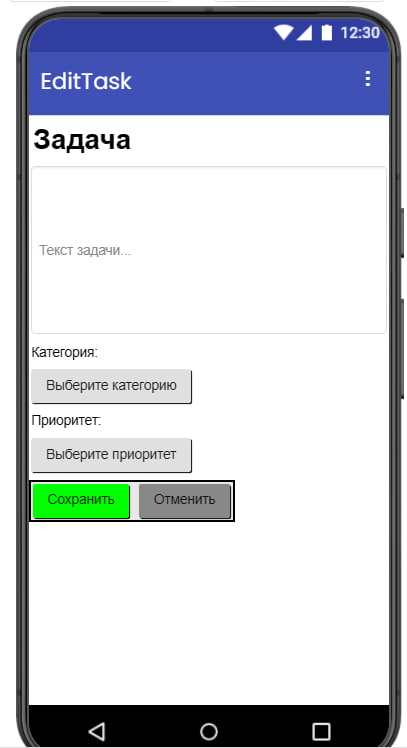
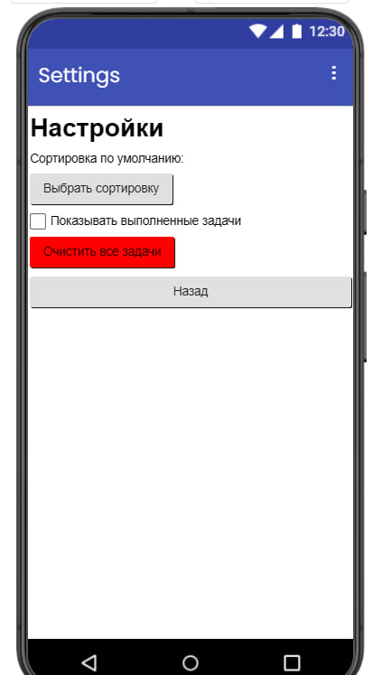

Как выглядит
Главный экран со списком задач, редактирование и настройки.



Что умеет
Всё, что нужно для списка дел, без лишних экранов и регистрации.
- Добавление задачВведите текст, выберите категорию и приоритет, нажмите «Сохранить».
- Редактирование и удалениеОткройте задачу, измените её или удалите одним нажатием.
- ПоискНачните вводить слово, и в списке останутся только подходящие задачи.
- Фильтр и сортировкаПоказывайте задачи одной категории и сортируйте их, например, по дате.
- Работает без интернетаЗадачи хранятся на телефоне и остаются после перезапуска приложения.
Как установить
- Нажмите «Установить» и скачайте файл
.apkна телефон. - Откройте скачанный файл.
- Если Android спросит, разрешите установку из этого источника.
- Нажмите «Установить» и откройте TaskFlow.